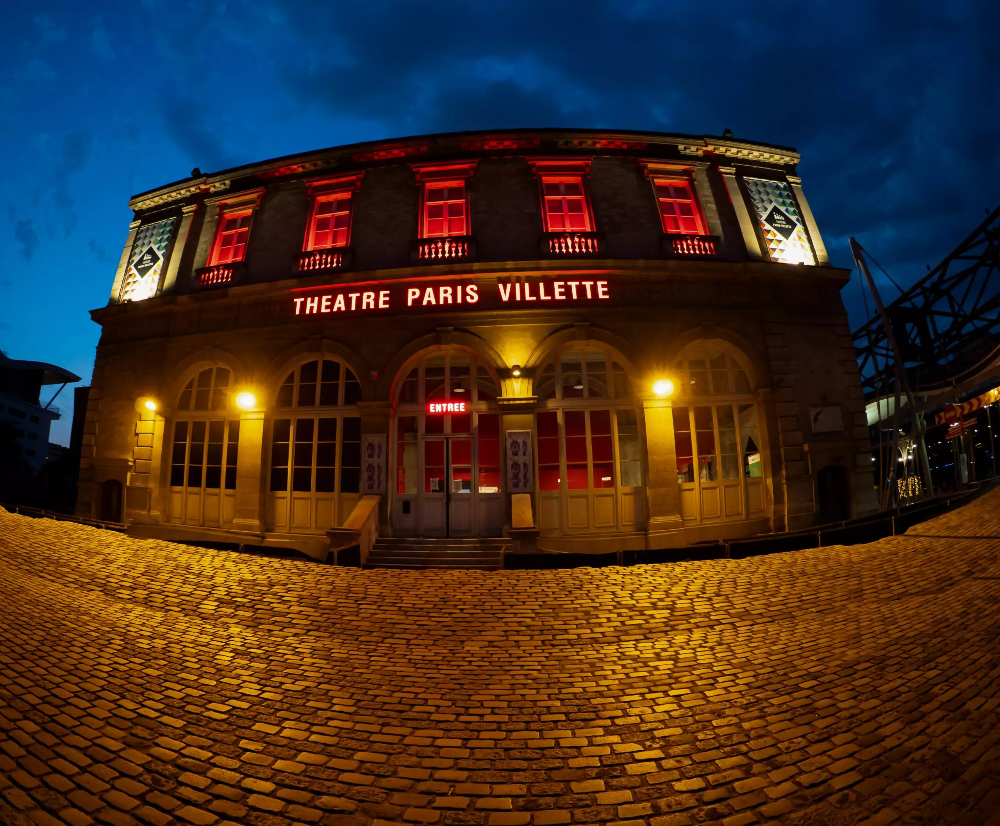
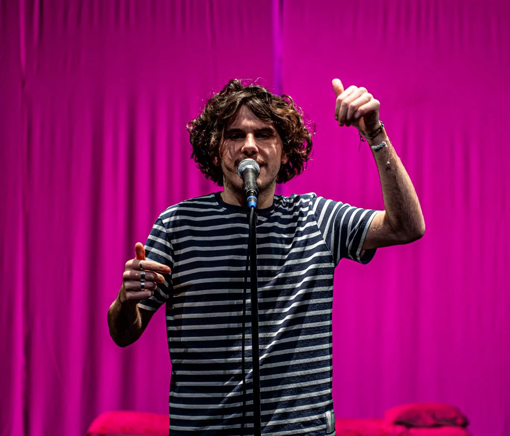
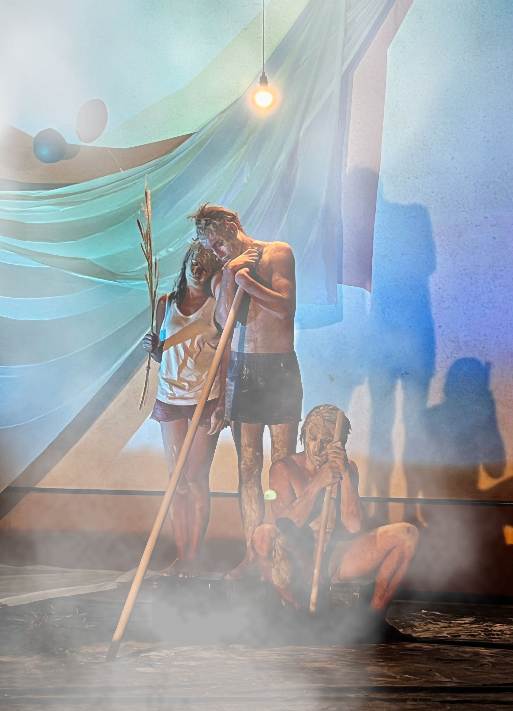

Un partenariat avec le Théâtre Paris-Villette
Le Collectif On finira bien par comprendre est heureux d'annoncer un partenariat avec le Théâtre Paris-Villette pour la saison 2026-2027. Cette collaboration marque une nouvelle étape importante pour le collectif, avec l'accueil de deux projets au sein du théâtre.
Illusions, d'Ivan Viripaev, y sera joué les 15 et 16 septembre en Salle Blanche. Le théâtre accueillera également une partie de la création de notre nouvelle pièce, Les Naufragés, en Salle Bleue en novembre.
Toutes les informations et la billetterie pour Illusions sont disponibles sur le site du théâtre.
Voir la fiche du spectacle →
Illusions au Théâtre Paris-Villette
Illusions d'Ivan Viripaev sera joué les mardi 15 et mercredi 16 septembre à 20h00, en Salle Blanche du Théâtre Paris-Villette (211 avenue Jean Jaurès, 75019 Paris). Quatre comédiens y racontent l'histoire de deux couples au crépuscule de leur vie, entre humour et vertige métaphysique.
Réservez dès à présent vos places pour cette étape parisienne du spectacle.
Réserver et en savoir plus →
Les Naufragés, notre nouvelle création
Le Collectif On finira bien par comprendre travaille actuellement à sa nouvelle création, Les Naufragés. Une partie du travail de plateau se fera au Théâtre Paris-Villette, en Salle Bleue, en novembre 2026, avant de se poursuivre lors d'une résidence de trois semaines au Grand Parquet en février 2027.
Deux temps de création complémentaires qui nous permettront de faire mûrir ce nouveau projet avant sa présentation au public. Nous partagerons prochainement plus de détails sur cette création.

Prochaines dates d'Illusions
Le spectacle Illusions d'Ivan Viripaev reprend la route ! Après un passage remarqué au Festival d'Avignon OFF en juillet 2025, nous sommes ravis d'annoncer de nouvelles dates pour 2026.
8 mai 2026 — Festival Coye la Forêt
Novembre 2026 — Piano'cktail, Théâtre de la Ville de Bouguenais
Réservez dès maintenant vos places pour découvrir ce récit vertigineux sur l'amour et ce qu'il en reste.

Ateliers au Lycée Saint Vincent de Senlis
En décembre 2025, le collectif a eu le plaisir d'intervenir auprès des classes de Première du Lycée Saint Vincent de Senlis pour des ateliers théâtre autour du thème du bac de français : « Les jeux de la parole et du cœur ».
Ces ateliers, donnés en lien avec notre spectacle Illusions d'Ivan Viripaev, ont permis aux lycéens d'explorer les mécanismes de la parole, du mensonge et de la vérité à travers des exercices ludiques et des improvisations inspirées du texte.
Une rencontre riche en échanges qui nous rappelle l'importance de la transmission et du dialogue entre les générations autour du théâtre.